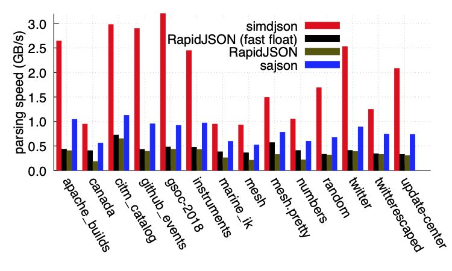

Highlights
- Fast: Over 2.5x faster than other production-grade JSON parsers.
- Easy: First-class, easy to use API.
- Strict: Full JSON and UTF-8 validation, lossless parsing. Performance with no compromises.
- Automatic: Selects a CPU-tailored parser at runtime. No configuration needed.
- Reliable: From memory allocation to error handling, simdjson’s design avoids surprises.
This library is part of the Awesome Modern C++ list.
Features
- Multithreaded processing of gigantic Newline-Delimited JSON (ndjson) and related formats
- JSON Pointer support so that you can query your document at high speed
- Support both conventional error handling (exceptions) as well as an error-code approach: you can compile your C++ code with or without exception support.
- Runtime dispatch: the library automatically detects the features supported by the processor. The library runs on all 64-bit systems, but it automagically benefits from advanced processors.
